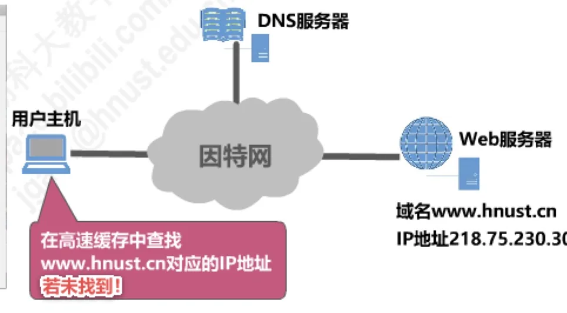
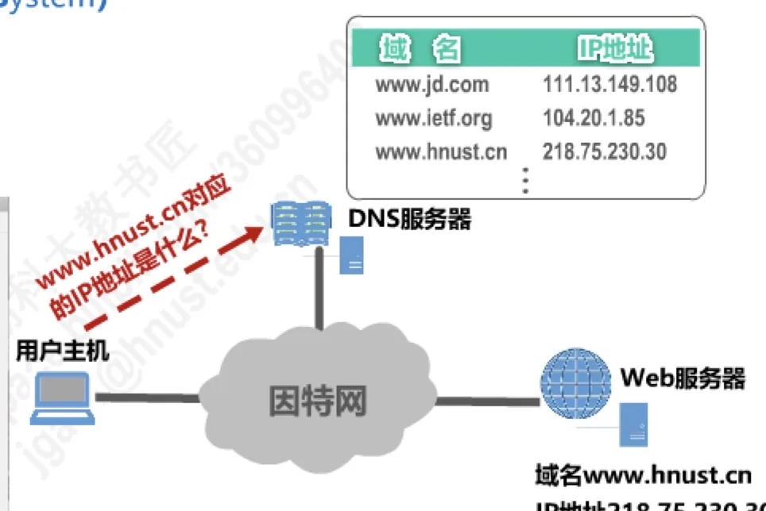
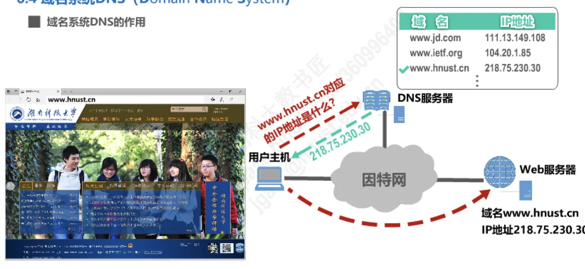
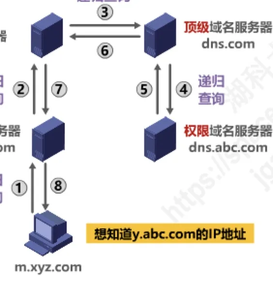
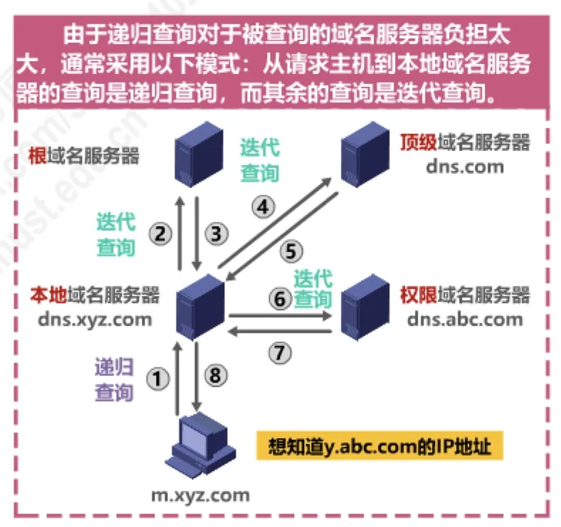
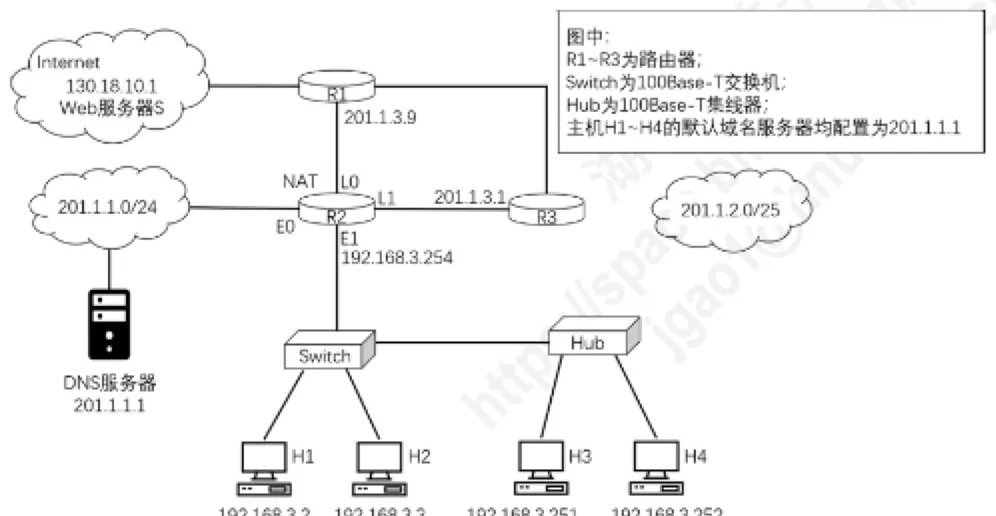
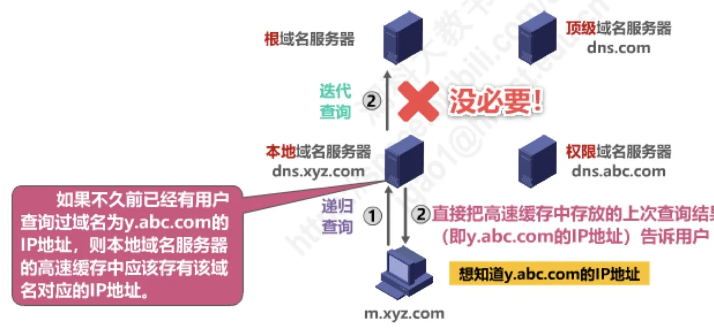
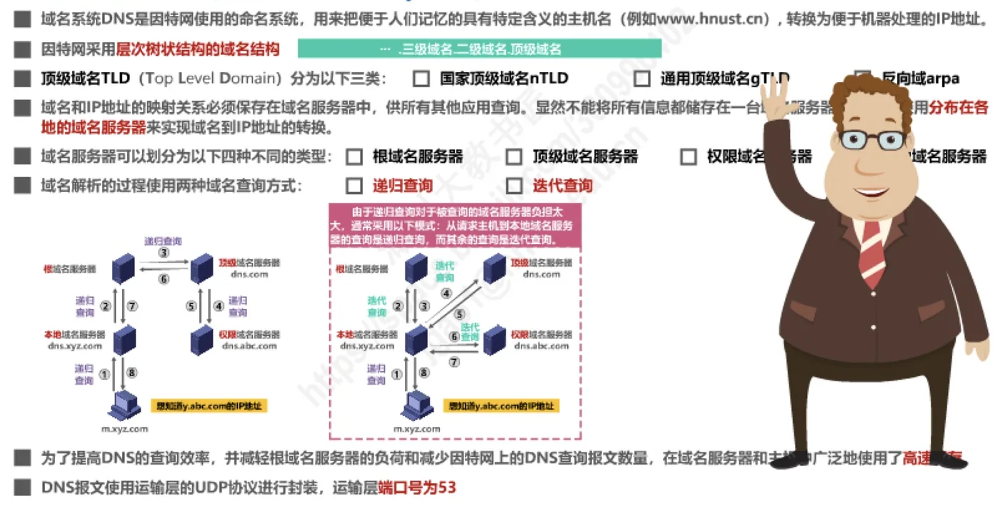

计算机通信与网络 · 第 6 章 应用层
6.4 域名系统DNS
用户访问网站时敲入的是 www.hnust.cn 这样便于记忆的名字，而分组在网络中转发靠的却是 IP 地址——把前者翻译成后者的，就是域名系统 DNS（Domain Name System）。本节先讲 DNS 要解决的问题，再看因特网那棵层次树状的域名空间和四类域名服务器如何分工，最后走一遍递归查询与迭代查询的解析过程，并说明高速缓存为什么不可少。DNS 是 6.1 节列举的应用层协议之一，后面讲 6.6 电子邮件的邮件地址和 6.7 万维网 WWW 的 URL 时，也都要靠它把域名换成地址。
1. 域名系统要解决的问题
因特网上的每一台主机都有唯一的 IP 地址，可是 IP 地址是一串数字，既不好记，也表达不出任何含义。于是人们给主机取了便于记忆、具有特定含义的名字，称为主机名，例如 www.hnust.cn。麻烦随之而来：用户和应用程序用的是主机名，路由器转发分组时依据的却是 IP 地址，两者之间必须有人做翻译。承担这项翻译工作的就是域名系统 DNS：它是因特网使用的命名系统，用来把便于人们记忆的、具有特定含义的主机名，转换为便于机器处理的 IP 地址。
这个转换过程对用户是完全透明的。在用户主机上执行 ping www.hnust.cn，命令会先把这个域名解析成 218.75.230.30，再向该地址发送回送请求并收到回答，屏幕上只留下往返时间，中间那次「名字换地址」的查询并不显眼。域名和 IP 地址的映射关系必须保存在域名服务器中，供所有其他应用查询；显然，不能把所有信息都储存在一台域名服务器中，DNS 使用分布在各地的域名服务器来实现域名到 IP 地址的转换。



2. 为什么域名系统必须是分布式的
既然解析如此基础，能不能整个因特网只设一台 DNS 服务器，所有主机都去问它？这种做法并不可取。因为因特网规模很大，这样的域名服务器肯定会因为超负荷而无法正常工作，而且一旦域名服务器出现故障，整个因特网就会瘫痪。
早在 1983 年，因特网就开始采用层次结构的命名树作为主机的名字（即域名），并使用分布式的域名系统 DNS。这样安排有两个好处：DNS 使大多数域名都在本地解析，仅少量解析需要在因特网上通信，因此系统效率很高；又由于 DNS 是分布式系统，即使单个计算机出了故障，也不会妨碍整个系统的正常运行。可见，后面要讲的层次化域名结构和多级域名服务器，正是为了把「一台机器扛下全世界」变成「大家分头扛」。
3. 因特网的域名结构
因特网采用层次树状结构的命名方法。域名的结构由若干个分量组成，各分量之间用「点」隔开，分别代表不同级别的域名，写作「….三级域名.二级域名.顶级域名」。
关于命名规则，有几条要点：每一级的域名都由英文字母和数字组成，不超过 63 个字符，不区分大小写字母；级别最低的域名写在最左边，级别最高的顶级域名写在最右边；完整的域名不超过 255 个字符。此外，域名系统既不规定一个域名需要包含多少个下级域名，也不规定每一级域名代表什么意思，这给使用单位留出了充分的命名自由。
域名由谁来管？各级域名由其上一级的域名管理机构管理，而最高的顶级域名则由因特网名称与数字地址分配机构 ICANN（Internet Corporation for Assigned Names and Numbers）进行管理。以湖南科技大学网络信息中心的域名 nic.hnust.edu.cn 为例：cn 是顶级域名，edu 是二级域名，hnust 是三级域名，nic 是四级域名。把这套规则画出来，就是从树根开始逐级分支的一棵命名树。
这种按等级管理的命名方法便于维护名字的唯一性，并且也容易设计出一种高效的域名查询机制——要判断一个域名是否存在，只需沿着它所属的那条分支查下去，不必翻遍整个名字空间。需要注意的是，域名只是个逻辑概念，并不代表计算机所在的物理地点：同一台主机换了接入的网络，IP 地址往往会变，而域名可以保持不变。
4. 顶级域名的分类与我国的二级域名
顶级域名 TLD（Top Level Domain）分为以下三类：
- 国家顶级域名 nTLD：采用 ISO 3166 的规定。如 cn 表示中国，us 表示美国，uk 表示英国，等等；
- 通用顶级域名 gTLD（generic Top Level Domain）：最常见的通用顶级域名有七个，见下表；
- 反向域 arpa：用于反向域名解析，即把 IP 地址反向解析为域名。
| 通用顶级域名 | 含义 |
|---|---|
| com | 公司企业 |
| net | 网络服务机构 |
| org | 非营利性组织 |
| int | 国际组织 |
| edu | 美国教育机构 |
| gov | 美国政府部门 |
| mil | 美国军事部门 |
这里有一个容易混淆的地方：在上述通用顶级域名里，edu、gov、mil 都带有美国色彩，而在国家顶级域名下注册的二级域名均由该国家自行确定。例如，顶级域名为 jp 的日本，将其教育和企业机构的二级域名定为 ac 和 co，而不用 edu 和 com。
我国则将二级域名划分为以下两类：一类是类别域名，共七个，见下表；另一类是行政区域名，共 34 个，适用于我国的各省、自治区、直辖市，例如 bj 为北京市、sh 为上海市、js 为江苏省，等等。
| 类别域名 | 含义 |
|---|---|
| ac | 科研机构 |
| com | 工、商、金融等企业 |
| edu | 教育机构 |
| gov | 政府部门 |
| net | 提供网络服务的机构 |
| mil | 军事机构 |
| org | 非营利性组织 |
5. 域名服务器的分类与作用
域名和 IP 地址的映射关系必须保存在域名服务器中，供所有其他应用查询；既然不能把所有信息都储存在一台域名服务器中，DNS 就使用分布在各地的多台域名服务器协同完成域名到 IP 地址的转换。按在层次结构中所处的位置和所起的作用，域名服务器可以划分为以下四种不同类型。
（1）根域名服务器
根域名服务器是最高层次的域名服务器。每个根域名服务器都知道所有的顶级域名服务器的域名及其 IP 地址。因特网上共有 13 个不同 IP 地址的根域名服务器；尽管我们将这 13 个根域名服务器中的每一个都视为单个的服务器，但「每台服务器」实际上是由许多分布在世界各地计算机构成的服务器群集。当本地域名服务器向根域名服务器发出查询请求时，路由器就把查询请求报文转发到离这个 DNS 客户最近的一个根域名服务器——这就加快了 DNS 的查询过程，同时也更合理地利用了因特网的资源。需要注意，根域名服务器通常并不直接对域名进行解析，而是返回该域名所属顶级域名的顶级域名服务器的 IP 地址。
（2）顶级域名服务器
这些域名服务器负责管理在该顶级域名服务器注册的所有二级域名。当收到 DNS 查询请求时，它就给出相应的回答，这个回答可能是最后的结果，也可能是下一级权限域名服务器的 IP 地址。
（3）权限域名服务器
这些域名服务器负责管理某个区域名。每一个主机的域名都必须在某个权限域名服务器处注册登记，因此权限域名服务器知道其管辖的域名与 IP 地址的映射关系，能够对管辖范围内的域名给出权威答案。另外，权限域名服务器还知道其下级域名服务器的地址。
（4）本地域名服务器
本地域名服务器不属于上述域名服务器的等级结构。当一个主机发出 DNS 请求报文时，这个报文首先被送往该主机的本地域名服务器；本地域名服务器起着代理的作用，会将该报文转发到上述的域名服务器的等级结构中。每一个因特网服务提供者 ISP（Internet Service Provider）、一个大学，甚至一个大学里的学院，都可以拥有一个本地域名服务器，它有时也称为默认域名服务器。本地域名服务器离用户较近，一般不超过几个路由器的距离，也有可能就在同一个局域网中。它的 IP 地址需要直接配置在需要域名解析的主机中——6.3 节的动态主机配置协议 DHCP 在给主机分配 IP 地址的同时，也会把 DNS 服务器地址一并告知主机，配的就是这台本地域名服务器。
6. 域名解析过程：递归查询与迭代查询
域名解析过程使用两种域名查询方式：递归查询与迭代查询，它们的区别在于「被问的人」要不要替查询者继续跑腿。
递归查询：主机向本地域名服务器查询时，如果本地域名服务器不知道被查询域名的 IP 地址，那么它就以 DNS 客户的身份，替主机继续向其他域名服务器查询，再把最终结果返回给主机；主机只发出一次请求、等待一次回答，剩下的「跑腿」由被查询的服务器负责到底。
迭代查询：被查询的域名服务器如果不知道答案，就把「下一步该问谁」告诉查询方——返回某个下级域名服务器的 IP 地址，由查询方自己再去问下一台服务器。答案要一步一步「接力」才拿得到。

可以看出，纯粹递归的路子让根域名服务器很不轻松。由于递归查询对于被查询的域名服务器负担太大，通常采用以下模式：从请求主机到本地域名服务器的查询是递归查询，而其余的查询是迭代查询。也就是说，主机把难题一次性交给本地域名服务器，本地域名服务器则自己拿着根域名服务器给出的线索，逐级去找顶级域名服务器、权限域名服务器。

两种方式下查询报文的条数也不一样。在递归查询中，用户主机只发出 1 条域名请求报文并等待回答；本地域名服务器同样只发出 1 条请求报文——因为每一级被查询的服务器都会替它继续往下问，它也只等一次回答。而在迭代查询中，本地域名服务器就得自己一条一条地问下来：最坏情况下要依次向根域名服务器、顶级域名服务器和权限域名服务器发出共 4 次查询。
把这种情形放进一个具体的网络里就更清楚了（图 7）：局域网中的主机 H1～H4 把默认域名服务器都配置为 201.1.1.1，201.1.1.1 就是这个网络的本地域名服务器。当 H4 要访问 www.abc.xyz.com 时，若采用迭代查询，本地域名服务器最坏要依次问四家：先问根域名服务器，得到顶级域名服务器（.com）的地址；再问顶级域名服务器，得到权限域名服务器（xyz.com）的地址；再问 xyz.com 权限域名服务器，得到权限域名服务器（abc.xyz.com）的地址；最后问 abc.xyz.com 权限域名服务器，才拿到 www.abc.xyz.com 的 IP 地址。反过来，如果所需记录已经在高速缓存里，这些查询一次都不必发出——这正是下一节要讲的高速缓存的价值。

最后交代 DNS 报文本身怎么走：DNS 报文使用运输层 UDP（User Datagram Protocol）协议进行封装，运输层端口号为 53。域名查询的报文短、一问一答，用无连接的 UDP 省去了建立连接的往返时间，解析效率更高。注记：当响应报文较大（如超过 512 字节）或两台域名服务器之间进行区域传送时，DNS 也会改用运输层 TCP、同样是 53 端口，这一点了解即可。
7. 高速缓存
为了提高 DNS 的查询效率，并减轻根域名服务器负荷和减少因特网上的 DNS 查询报文数量，在域名服务器中广泛地使用了高速缓存。高速缓存用来存放最近查询过的域名以及从何处获得域名映射信息的记录。有了它，重复的解析请求往往在本地就能得到回答。

不过，域名到 IP 地址的映射关系并不是永久不变的。为保持高速缓存中的内容正确，域名服务器应为每项内容设置计时器并删除超过合理时间的项（例如，每个项目只存放两天）。
不但在本地域名服务器中需要高速缓存，在用户主机中也很需要。许多用户主机在启动时从本地域名服务器下载域名和 IP 地址的全部数据库，维护存放自己最近使用的域名的高速缓存，并且只在从缓存中找不到域名时才向域名服务器查询；同理，主机也需要保持高速缓存内容的正确性。本节图 1 中「先在高速缓存中查找」的那一步，说的就是主机侧的这份缓存——它与本地域名服务器一侧的缓存一起，让绝大多数域名解析都不必惊动根域名服务器。

本节小结
- DNS 是因特网使用的命名系统，把便于记忆的主机名（域名）转换为便于机器处理的 IP 地址；映射关系必须保存在域名服务器中，且只能由分布在各地的多台服务器分担——早在 1983 年因特网就采用了层次结构的命名树加分布式 DNS，使大多数域名在本地即可解析；
- 域名是「….三级域名.二级域名.顶级域名」的层次结构：每级由字母和数字组成、不超过 63 个字符、不区分大小写，级别低的写在最左边，完整域名不超过 255 个字符；各级由上一级机构管理，顶级域名由 ICANN 管理；域名只是逻辑概念，不代表主机的物理地点；
- 顶级域名分三类：国家顶级域名 nTLD（如 cn、us、uk）、通用顶级域名 gTLD（com、net、org、int、edu、gov、mil）和反向域 arpa；国家顶级域名下的二级域名由该国自行确定（如日本用 ac、co），我国则兼用七个类别域名和 34 个行政区域名；
- 域名服务器分四类：根域名服务器（13 个不同 IP 地址，实为服务器群集，只返回所属顶级域名服务器的地址）、顶级域名服务器、权限域名服务器（管理某个区域，知道管辖域名与 IP 的映射）和本地域名服务器（不属于等级结构，起代理作用，其地址直接配置在主机中）；
- 解析过程有递归查询与迭代查询两种方式，实际采用的是「主机到本地域名服务器递归、其余迭代」的模式：迭代查询下本地域名服务器最坏要发出 4 次查询；DNS 报文用运输层 UDP 封装，端口号为 53；
- 高速缓存在域名服务器和主机中都广泛使用，存放最近查询过的域名及映射来源，可直接回答重复查询；每项内容设计时器、超时删除（如两天），以保证缓存内容正确。